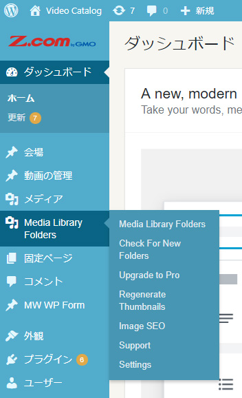
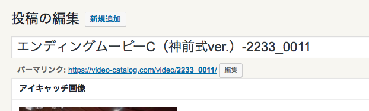
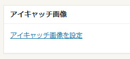
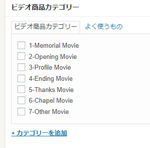
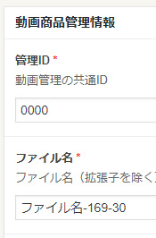
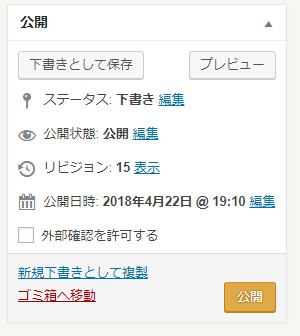

共有動画の更新
■フロー（流れ）
- 動画ファイル名を変更する
- サムネイル画像を作成する
- サムネイル画像を登録する
- 動画をSFTPでアップする
- 動画を登録する
1.動画のファイル名を変更する
- 用意された動画の動画ファイル名を指定の名前に変更する。この場合動画ファイル名がそのまま動画IDになる
2.サムネイル画像を作成する
- 動画を再生し、画面のハードコピーを取得する
- Photoshop等で幅640px高さ360pxサイズに画像加工し、「動画ID_thumb.jpg」と名前を付けて保存
3.サムネイル画像をWordPressに登録する
WordPressの管理画面からMedia Library Foldersの項目を選ぶ

thumbフォルダを開く

Add Fileをクリックし、「Drag & Drop Files Here」に該当画像をドラッグ＆ドロップする


4.動画をファイルをアップする
- FTPソフト（FileZilla等)でVideoCatalogのサーバーに接続する（backlog参照）
- /wordpress/wp-content/uploads/movieのフォルダまで移動
- movieフォルダに該当動画をアップする
5.WordPressに動画を登録する
WordPressの管理画面から「動画の管理」の項目を選ぶ

「新規追加」を選ぶ
ルールとして「指定の動画タイトル-(ハイフン)動画ID」と動画のタイトルを入力する
例．
「プレミアム-2158_0003」
動画ファイル名下にあるパーマリンクの「http://videocatalog.webstarterz.com/video/」以下を動画IDに修正する

「アイキャッチ画像を設定」を選び、該当のサムネイル画像を選択する

「ビデオ商品カテゴリー」項目は指定されたカテゴリーにチェックを入れる

動画商品管理情報の「管理ID」と「ファイル名」をそれぞれ動画IDに修正する

動画の種類を共有動画にチェックを入れ、動画比率、動画枚数が分かる場合は入力する
右上の更新ボタンを押し、動画登録完了
